Whole nuts, copra, oils, food ingredients and coir media — sourced from the coconut belt of Pollachi and packed at our own export packhouse.
Whole coconutsCopraCoconut oilsFood ingredientsCoir & growing media
Cover: coconut harvest in the Pollachi region · photo FreshNet Farms
About usWho we are
FreshNet Farms Private Limited
A coconut value-chain company building a global marketplace for India’s smallholder coconut farmers.
We work directly with smallholder farmers, aggregators, harvesters and processors across Tamil Nadu’s coconut belt, adding value at every step from grove to container — and raising farmers’ income on a per-unit basis.
Along the chain we create dignified jobs for rural youth and landless workers, training them into skilled harvesters, graders and packhouse staff.
From our office and export packhouse in Pollachi we supply whole coconuts, copra, oils, food ingredients and coir growing media, packed to domestic, Middle East and EU specifications.
FreshNet Farms is a portfolio partner of Upaya Social Ventures (since 2022) under its Dignified Jobs Accelerator.
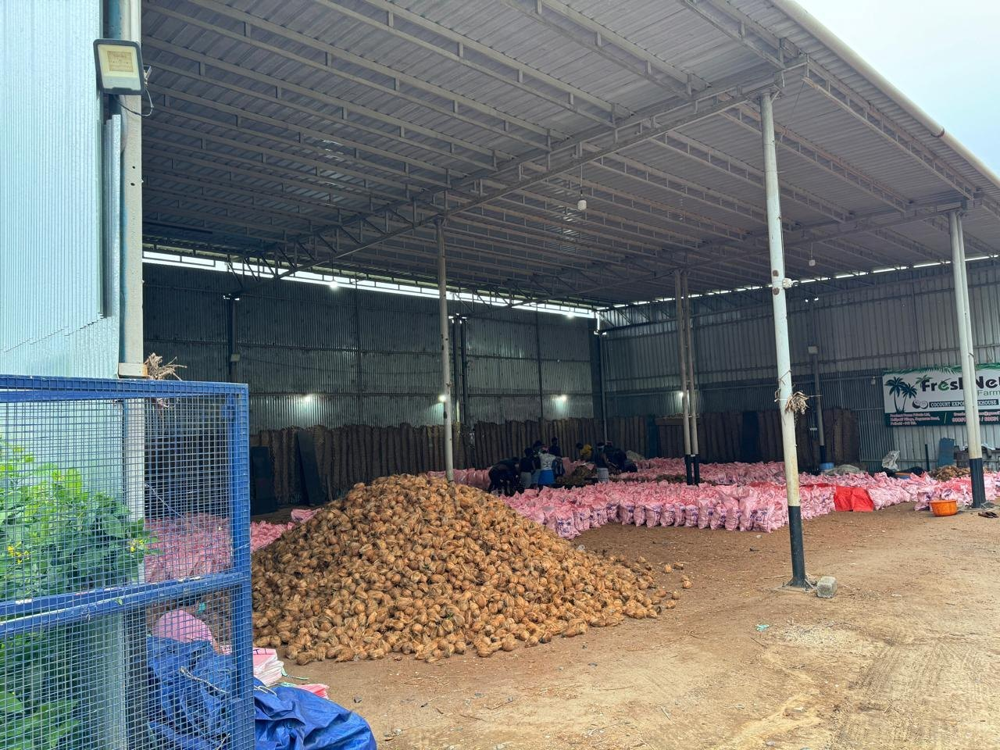
Our export packhouse · Pollachi
2019
Established
51–100
People employed
Pollachi
Office & export packhouse
365 days
Coconut supply, year-round
In-house
Logistics management
ME · EU
Export grades packed
Founder & CEOSenthil Kumar — MBA (Agribusiness), TNAU; 15+ years in agribusiness strategy, farm procurement and supply chains across Asia-Pacific.
Mature brown coconuts de-husked with a tuft of husk left over the “eyes” — the most sensitive part of the nut. Protecting it extends shelf life, which is why semi-husked nuts are the preferred export format to the Middle East and Europe.
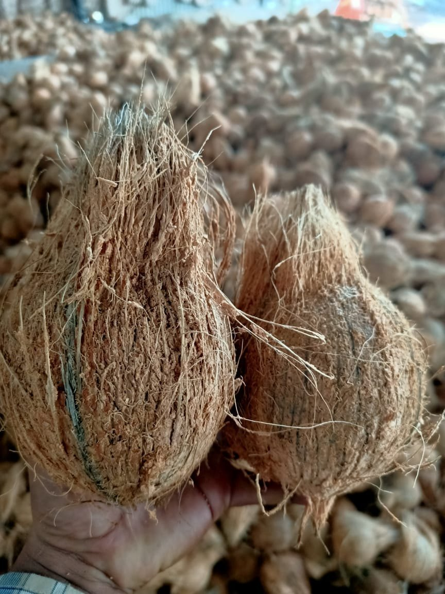
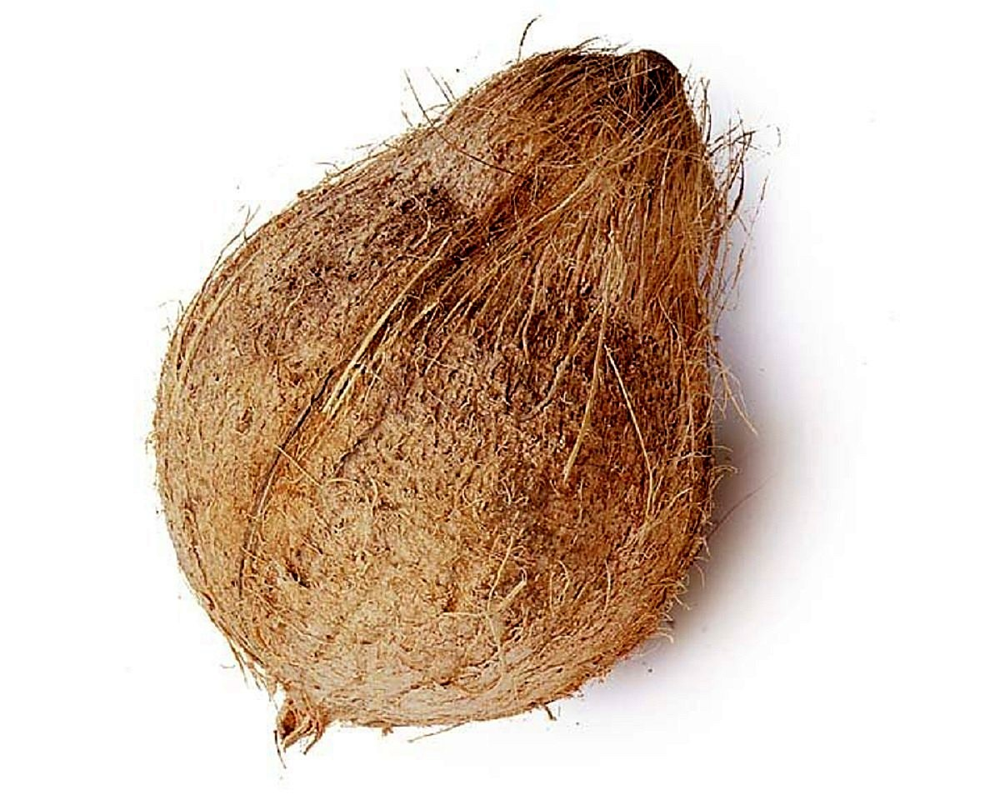
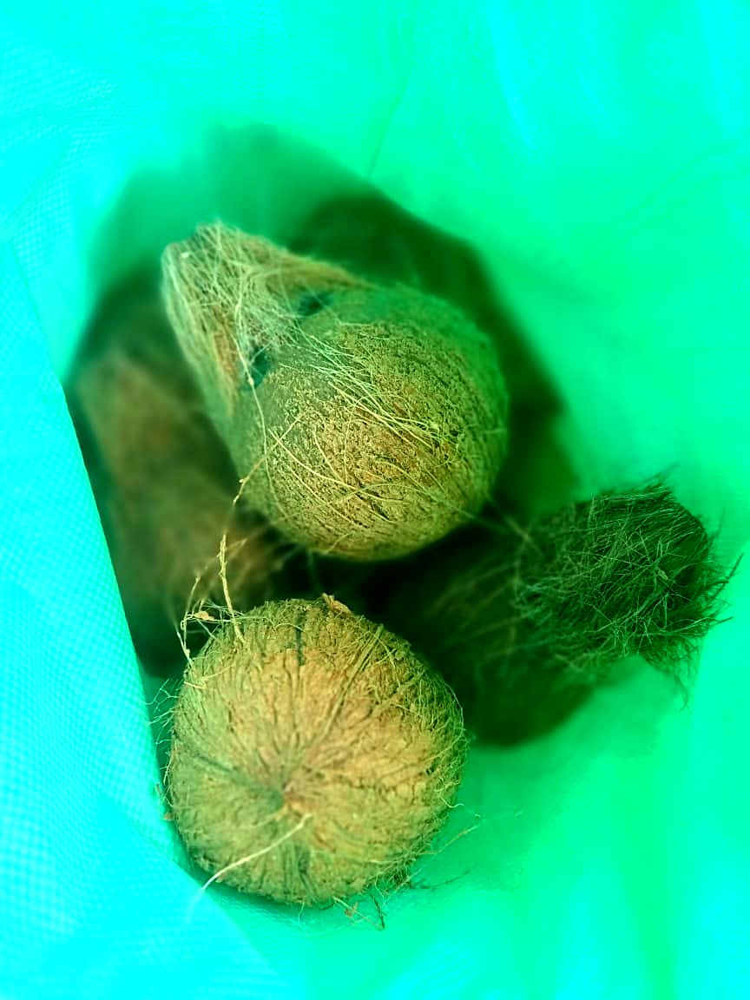
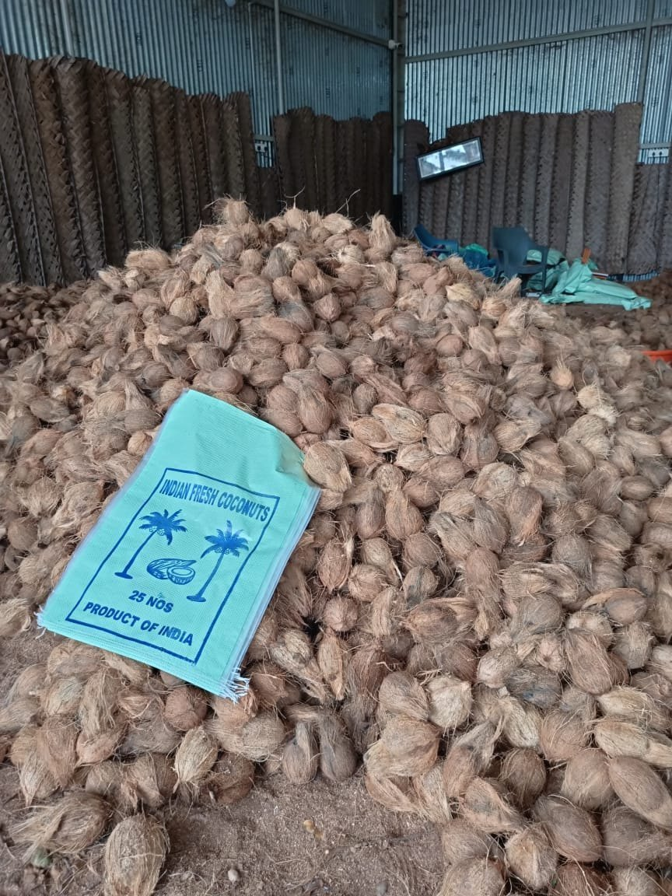
Export grade specifications
Middle East
European Union
Bag type (kg)
12.5
13
15
17
22.5
22.5
Coconut type
Semi-husked
Semi-husked
Semi-husked
Semi-husked
De-husked
De-husked
Bags per container
2,290
2,200
1,900
1,680
1,080
1,080
Total volume (kg)
28,625
28,600
28,500
28,560
24,300
24,300
Nut size, min – max (g)
350 – 650
400 – 700
450 – 750
500 – 850
450 – 550
350 – 550
Average weight per nut (g)
500
550
600
675
550
450
Nuts per bag
25
25
25
25
40
50
Colour
Biscuit / brown
Biscuit / brown
Brown
Brown
Brown
Brown
Type of bag
PP bag
PP bag
PP bag
PP bag
PP bag
PP bag
Harvest maturitydays on tree (maturity index)
60
60
60
60
60
60
Curing after harvest
15–30 days
15–30 days
15–30 days
15–30 days
20 days
20 days
Shelf life after packingmax. stocking period
45–60 days
45–60 days
45–60 days
45–60 days
60 days
60 days
Available 365 daysDomestic: 100 nuts / PP bag, avg 500–550 g, A gradeMOQ 10,000 kg
Fully de-husked mature Pollachi coconuts with a clean, brown shell — for wholesale markets, food processors and retail packing.
Product type
Matured coconut
Variety / origin
Pollachi, Tamil Nadu
Average weight
550 g
Size
Medium
Grade
A grade
Husk type
Fully husked
Pack size
100 nuts / bag
Packaging
PP bag
MOQ 10,000 kg365 days
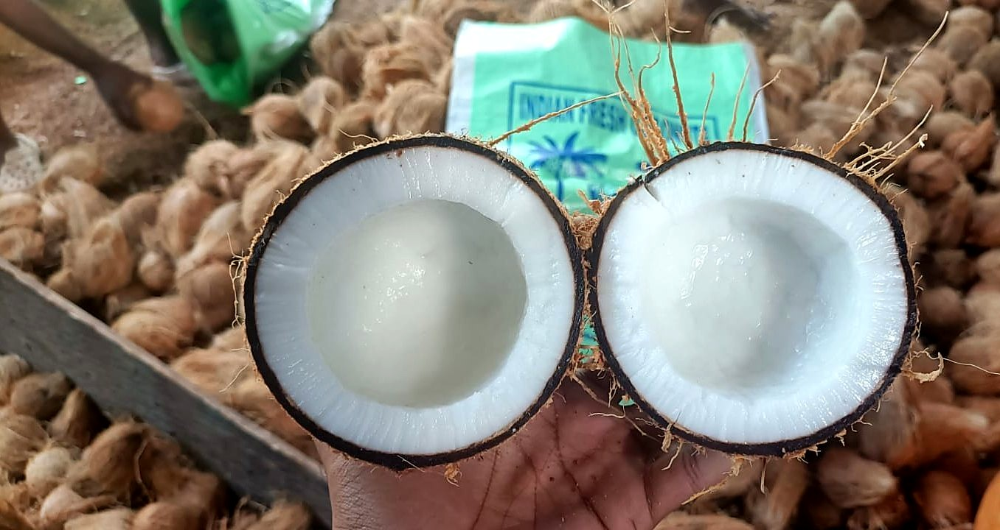
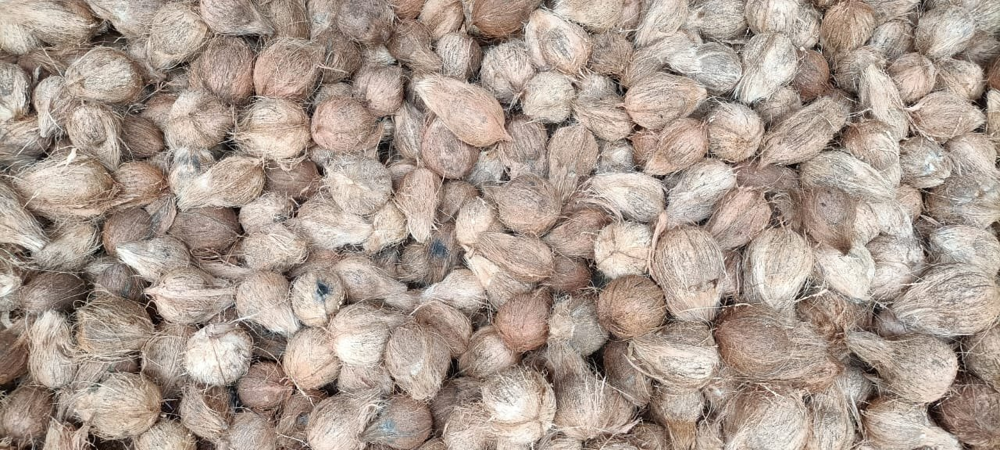
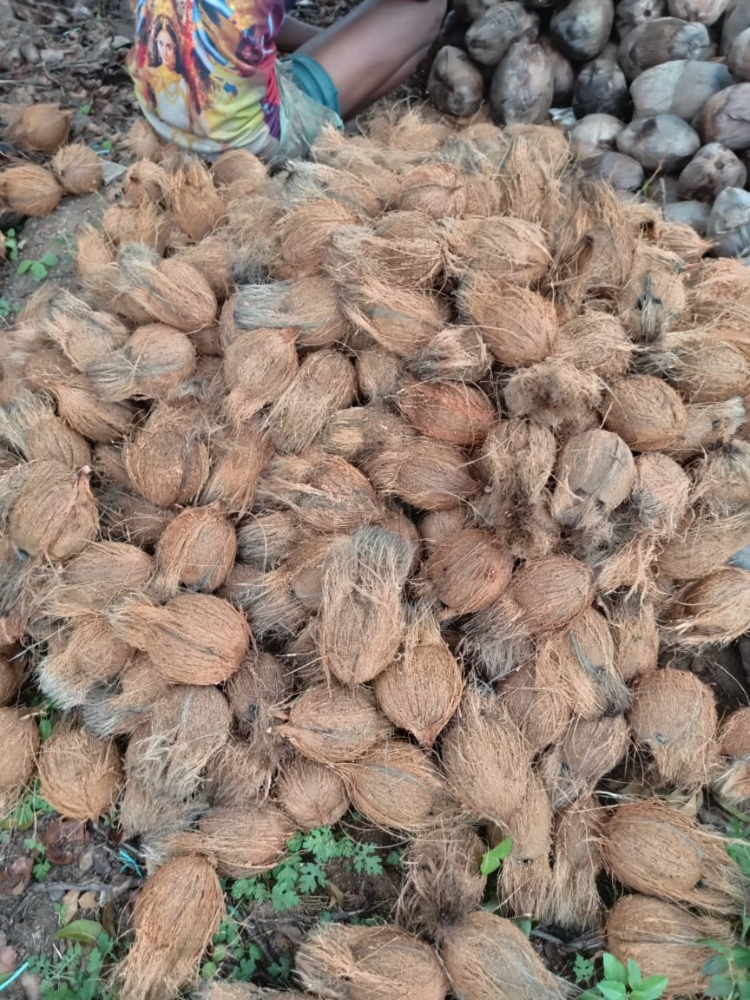
Temple & household
Pooja / Raw Coconut
Mature semi-husked nuts selected for pooja and religious use — clean tuft, sound shell, uniform size — packed by count in barti bags.
Product type
Mature
Form
Semi-husked
Average weight
400 g
Origin
Pollachi
Nuts per bag
100 · 120 · 150 · 175
Bag weight
50 kg (barti bag)
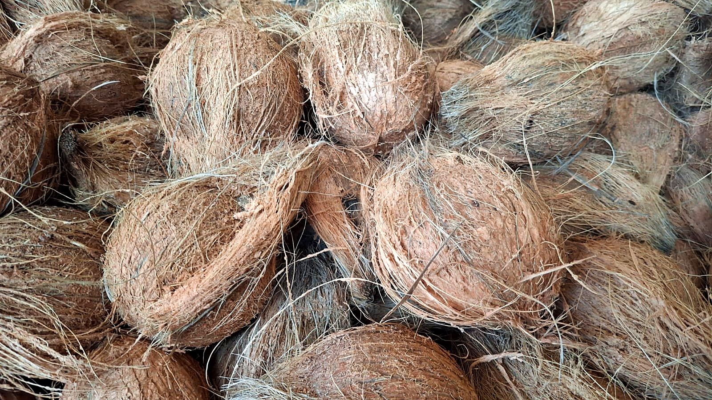
Traceable · contract farming
GLOBALG.A.P. (IFA) Coconut
Coconuts grown by our contract-farming network under the GLOBALG.A.P. Integrated Farm Assurance (IFA) scheme — for buyers who need farm-level traceability.
Young green coconuts picked at around seven months, when they hold the most sweet water and soft, jelly-like meat. Supplied whole in two formats.
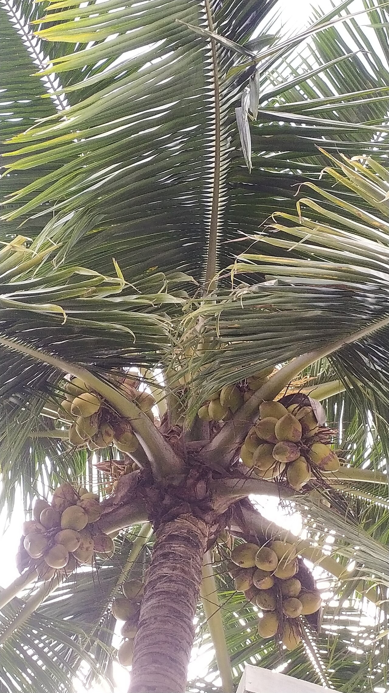
Naati tender coconut
Variety
Naati
Average weight
1.8 kg
Water content
400 ml +
Size
Large
Grade
A grade · whole husk
Origin
Pollachi
Packaging
Loose
MOQ
80 pieces
Pollachi tender coconut
Variety
Pollachi
Average weight
550–650 g
Copra recovery
180–190 g
Size
Medium
Grade
A grade · whole husk
Cultivation
Natural
Origin
Tamil Nadu
MOQ
100 pieces
Germinated coconut
Sprouted Coconut
When a mature nut germinates, the water inside turns into a soft, spongy edible “coconut apple”. We supply fresh sprouted nuts and a spray-dried sprout powder.
Sun-dried coconut kernel from the Pollachi belt — cup copra and ball copra in edible grade, with oil content above 65%.
Cup copraBall copraWhite edible copraBrown edible copra
02 · CopraEdible copra
Copra
Sun dried · edible grade
Coconut Copra
HSN 0801 19 20
Copra is the dried kernel of the mature coconut, prized for its high oil content. Ours is sun-dried on clean drying yards and supplied as cup (half-shell) copra and whole ball copra — for direct eating, cooking, bakery, pooja and oil milling.
Pressed from sun-dried coconut kernel. A white solid fat below about 25 °C and a clear, thin liquid in warmer climates; unrefined grades keep a distinct coconut aroma.
Grade
Food grade
Extraction
Cold pressed
Raw material
Sun-dried coconut
Origin
Tamil Nadu
Applications
Cooking · dietary use
Availability
365 days
500 ml plastic bottleBulk 500 ml – 15 litre
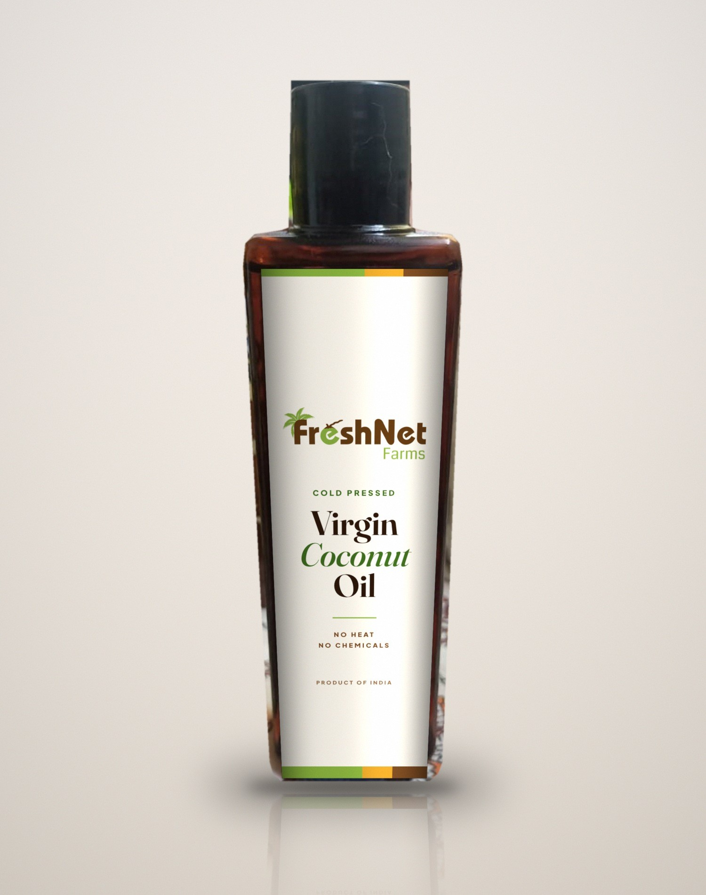
Cold pressed · no heat, no chemicals
Virgin Coconut Oil (VCO)
Extracted from fresh coconut milk by pressure alone — no heat, no bleaching, no deodorising — so it keeps its natural aroma, antioxidants and medium-chain fats, especially lauric acid. For cooking, skin and hair care.
Medium-chain triglyceride oil fractionated from coconut oil — chiefly caprylic (C8) and capric (C10) acids, which the body metabolises differently from long-chain fats. Used in nutraceuticals, sports nutrition, coffee and dressings.
Source
Coconut
Main fatty acids
C8 · C10
Grade
Pharma grade
Purity
100%
Form
Liquid
Applications
Nutraceutical · food
1 litreHDPE drum
From the brown skin of the kernel
Coconut Testa Oil
Pressed from the testa — the thin brown skin pared off the kernel during processing. A light oil naturally rich in vitamin E and phenolic antioxidants; used in cooking, hair and skin care.
The cake left after mechanical (expeller) pressing of copra. Used as cattle feed and organic fertiliser, or for further oil recovery by solvent extraction.
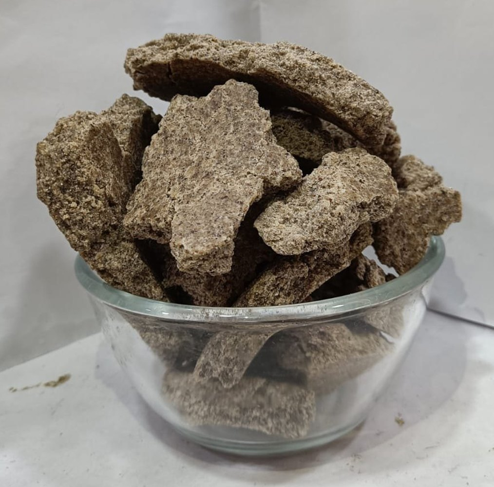
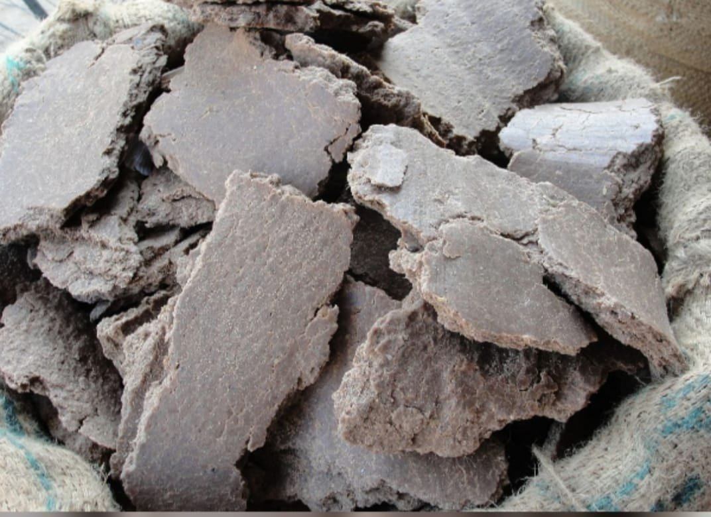
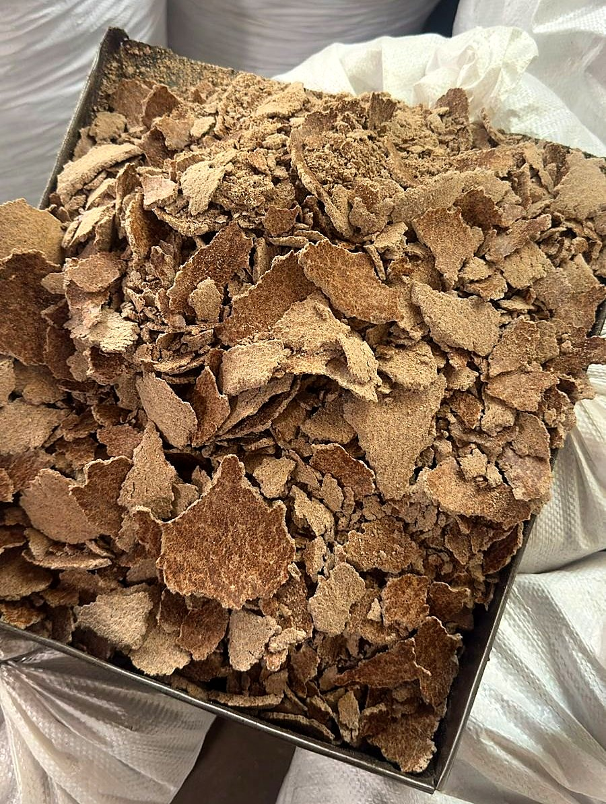
< 5%
Oil content
< 8%
Moisture
Expeller
Extraction type
6 months
Shelf life
Material
100% coconut
Colour / form
Brown cake
Applications
Cattle feed · organic fertiliser
Country of origin
India
25 kg bag · looseMOQ 100 kg
Made with our virgin coconut oil
Personal Care
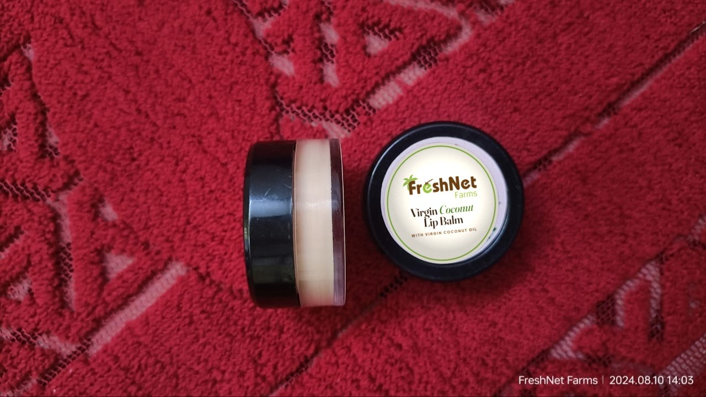
VCO soap
Base
Coconut oil
Form
Rectangular bar
Skin type
All skin types
Fragrance
Coconut
Packing
Boxed bar
Use
Body & bath
VCO lip balm
A nourishing balm based on our cold-pressed virgin coconut oil, in a compact screw-top jar.
An opaque, milky-white liquid pressed from the grated flesh of mature coconuts — a dairy alternative for beverages, ice cream, cooking and bakery.
Fat content
6.0%
Preservative
None added
Packaging
Can · bottle
Pack sizes
180 ml · 500 ml
365 daysRange 100 ml – 1 litre
Instant · vegan · shelf-stable
Coconut Milk Powder
Spray-dried coconut milk that reconstitutes instantly with water. A convenient alternative to canned milk and a non-dairy creamer for coffee and lattes.
Dried, finely shredded coconut kernel — a cholesterol-free, fibre-rich ingredient for confectionery, puddings, cereals, toppings and baked goods, and a direct substitute for fresh grated coconut.
Form
Fine desiccated
Fat content
High fat
Rich in
Manganese · copper
Uses
Catering · bakery
365 days100 g & 1 kg pouchesBulk bags on request
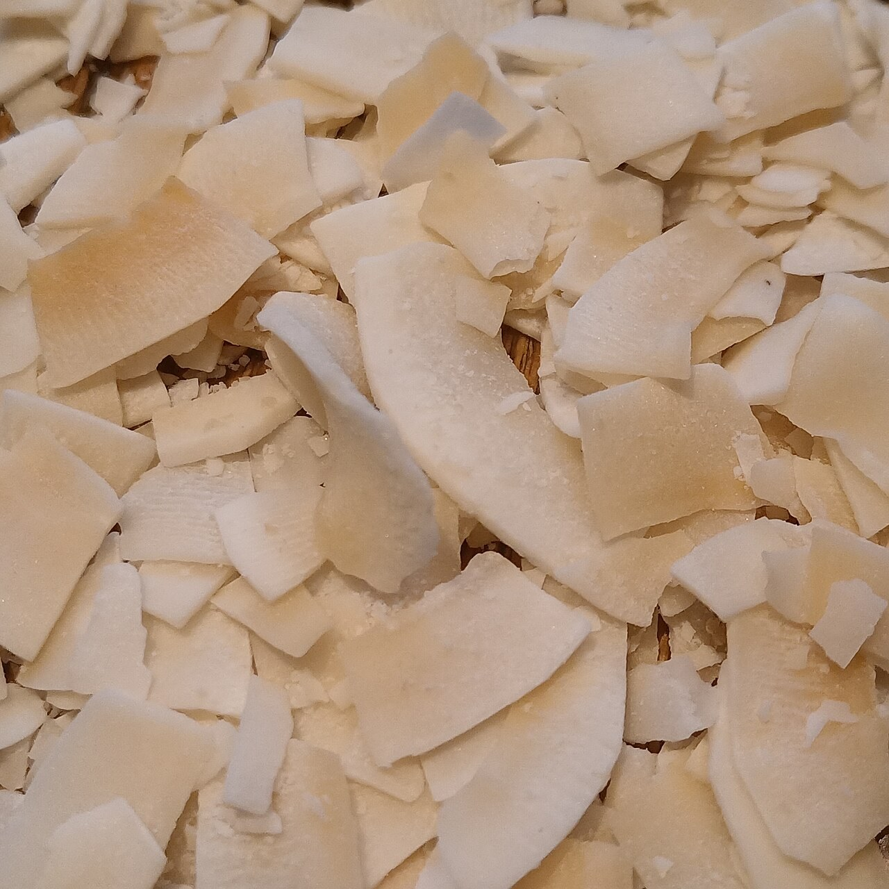
Unsweetened
Coconut Flakes
Wide, white flakes of dried coconut — a source of fat, fibre, iron and protein, plus calcium, copper, magnesium, potassium and zinc.
Type
Desiccated flakes
Sweetness
Unsweetened
Colour
White
Shelf life
12 months
1 kg PP bag
Gluten-free · grain-free
Coconut Flour
HSN 1106 30 90
Dried coconut meat milled to a fine, mild-tasting flour. Naturally gluten-free — suited to coeliac, wheat-allergy and grain-free diets in breads, pancakes, cookies and muffins.
Palm sugar made from the sap of the coconut flower-bud stem. Unrefined and chemical-free; golden, honey-like, low in fructose and naturally containing iron, calcium and potassium.
Form
Granules
Glycemic index
35 (low GI)
Colour
Golden brown
Processing
Natural, unrefined
365 days100 · 200 · 250 · 400 · 500 · 750 g · 1 kg
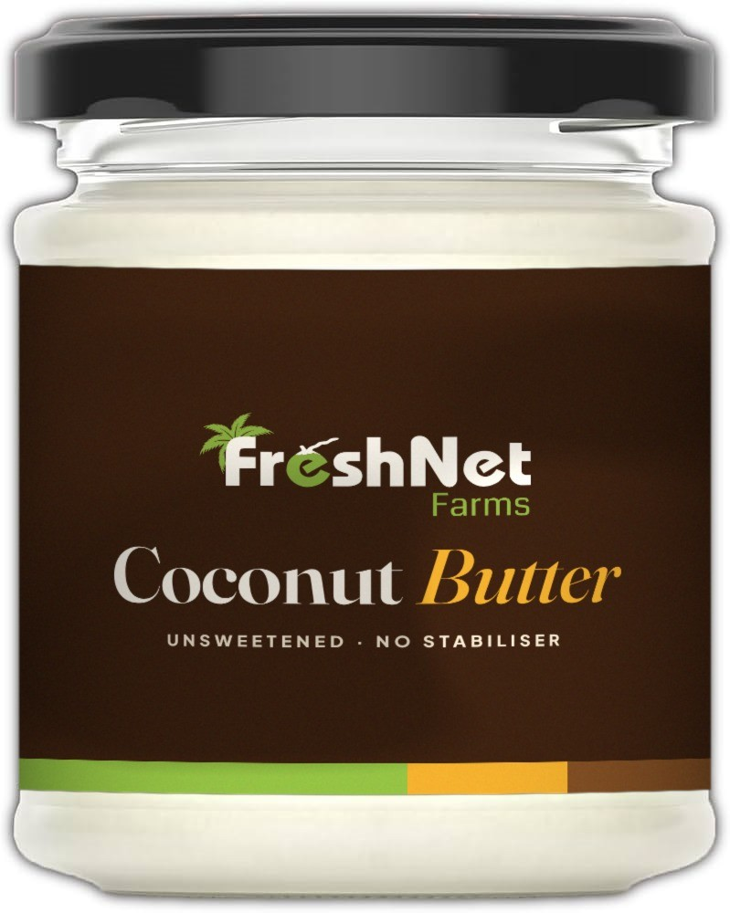
Whole-food spread
Coconut Butter
A semi-solid, creamy paste made by pureeing the dried flesh of mature coconuts. Contains both the oil and the fibre — slightly sweet, nutrient-rich and free of stabilisers; for desserts, cooking and bakery.
100% natural, biodegradable coir pith compressed into blocks — a multipurpose medium for nurseries, horticulture and floriculture that raises yields while saving water and fertiliser. 5 kg blocks in two grades: washed low EC and unwashed high EC.
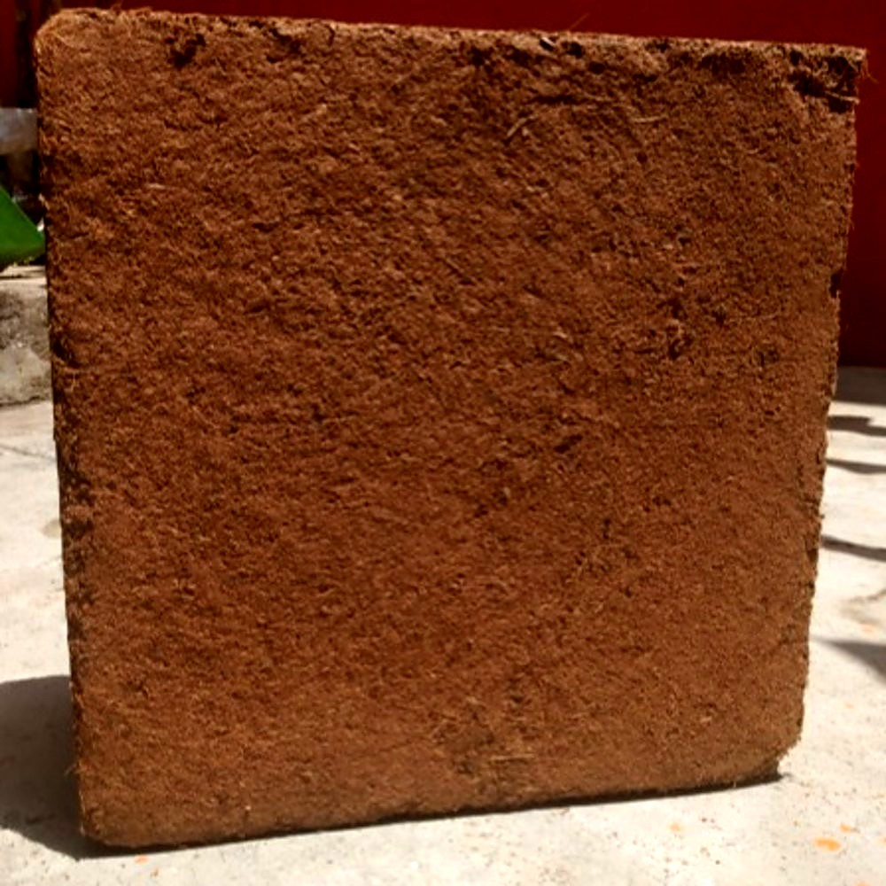
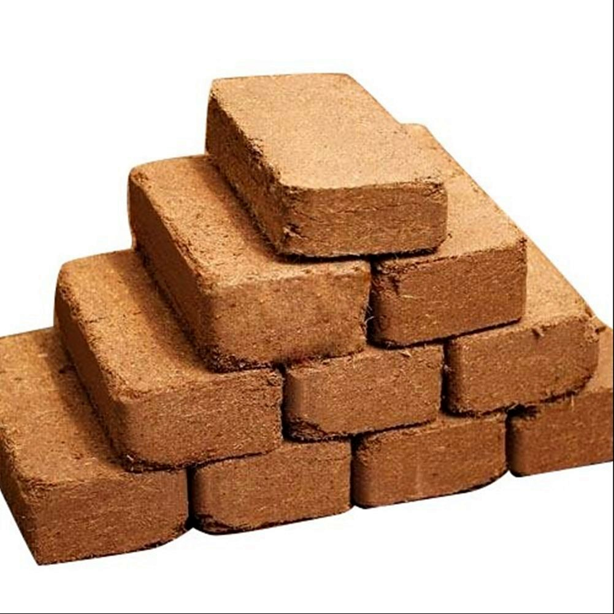
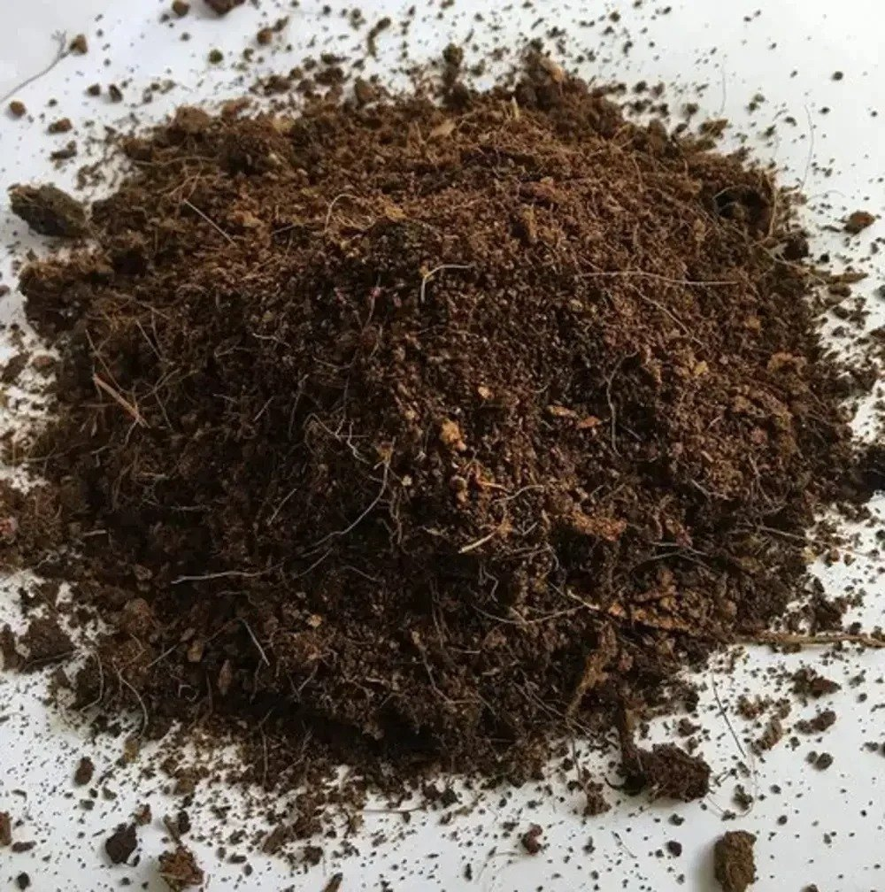
Block specification · 5 kg (Iran requirement)
1 : 5
Compression ratio
< 15%
Moisture
70–75 L
Breakout volume
< 0.5 mS/cm
EC (1:1.5)
5 kg ± 100 g
Weight
5.5 – 6.5
pH
30×30×10 cm
Size
6–8 mm
Screen · ¼″ mesh
< 10%
Fibre
< 3%
Impurity
None
Foreign material
Jan – Jun
Season
Grow bag packing
#
Size (cm)
Weight (kg)
Mix
Pith %
Chips %
Pieces / pallet
Per 40 ft container
1
100×15×12
1.9
100
100
—
600
12,000
2
100×15×12
2.0
70/30
70
30
600
12,000
3
100×15×15
2.4
100
100
—
500
10,000
4
100×15×15
2.5
70/30
70
30
500
10,000
5
100×18×14
2.7
100
100
—
450
9,000
6
100×18×14
2.8
70/30
70
30
450
9,000
3rd week of January – 1st week of JuneBlocks: MOQ 100 piecesPort: Tuticorin
De-fibred coconut husk pith with very high water retention — 600–800% of its dry weight, up to 1,100% — high potassium and low bulk density (0.18 g/cc). Cuts water and fertiliser use in floriculture, potting mixes and horticulture.
Specification
Brown
Dark brown
EC
Low EC
Low EC
Moisture
Below 15%
Below 15%
Sieving
Unscreened
Unscreened
Use
Floriculture, potting mix
Floriculture, horticulture
Packing
25 kg bag · loose
25 kg bag · loose
MOQ
100 kg
100 kg
Aeration for orchids & potting mixes
Coconut Husk Chip Blocks
Coconut husk cut into small chips and compressed into blocks. Added to potting soil or mixed with cocopeat to keep the ideal air-to-moisture balance around plant roots.
PP bags 12.5 / 13 / 15 / 17 / 22.5 kg (25–50 nuts); domestic 100 nuts / bag
10,000 kg
45–60 days
365 days
Fully husked coconut
PP bag · 100 nuts
10,000 kg
—
365 days
Pooja / raw coconut
Barti bag 50 kg · 100–175 nuts
On request
—
On request
GLOBALG.A.P. coconut
Gunny bag
On request
—
On request
Tender coconut
Loose, whole husk
80–100 pcs
—
On request
Edible copra
1 · 5 · 20 · 25 · 50 kg PP / gunny bags
100–10,000 kg
6 months
365 days
Coconut oil
500 ml bottle · bulk to 15 L
On request
—
365 days
Virgin coconut oil
1 L plastic bottle · bulk
On request
—
On request
MCT oil
1 L · HDPE drum
On request
—
On request
Testa oil
1 L bottle
On request
—
On request
Coconut oil cake
25 kg bag · loose
100 kg
6 months
On request
Coconut milk
180 ml · 500 ml bottles (100 ml – 1 L)
On request
—
365 days
Coconut milk powder
500 g pouch
On request
12 months
On request
Coconut powder (defatted)
200 g · loose bulk
50 kg
2 years
On request
Desiccated coconut
100 g · 1 kg pouch · bulk bags
On request
—
365 days
Coconut flakes
1 kg PP bag
On request
12 months
On request
Coconut flour
500 g stand-up pouch · bulk bags
On request
—
365 days
Coconut sugar
100 g – 1 kg PP bags / pouches
On request
—
365 days
Coconut water / powder
200 ml · 500 ml bottle / 100 g packet
On request
—
On request
Cocopeat blocks & grow bags
5 kg blocks · grow bags (see p. 19)
100 blocks
—
Jan – Jun
Coir pith powder
25 kg bag · loose
100 kg
—
On request
Husk chip blocks
4 kg block
100 kg
5 years
On request
Private label & custom packingBag type, nut count, pouch size and labelling can be tailored to your market. Prices are quoted per order (FOB / CIF) — contact our export team.